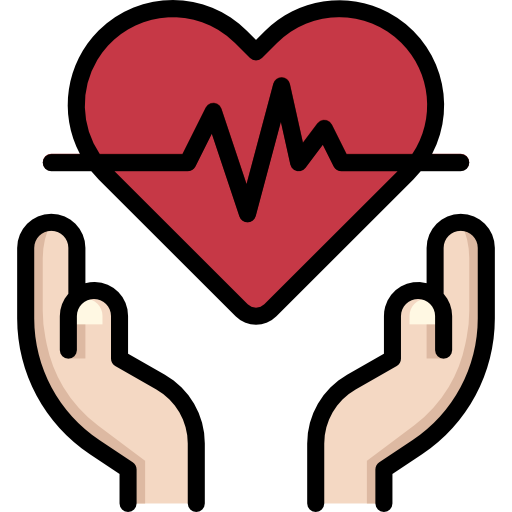
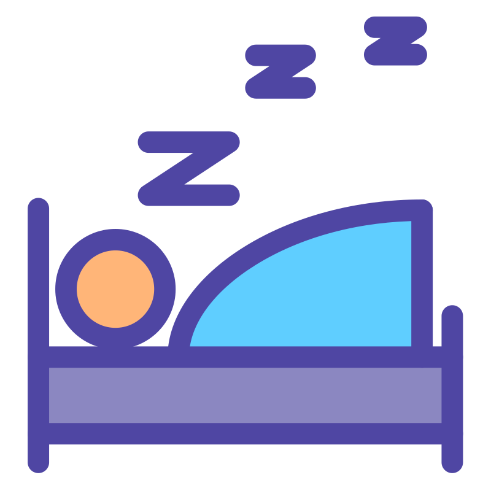
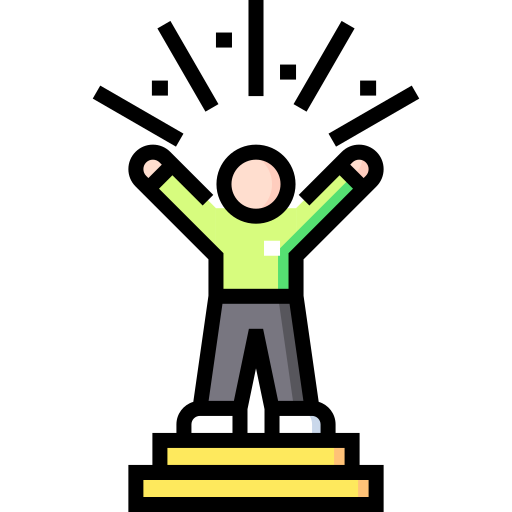

L'unité du corps et de l'esprit, pour s'ouvrir à plus grand que soi.
Découvrez le chemin vers l'harmonie intérieure grâce à la sophrologie
Prendre rendez-vous
Johanne Chieu
Sophrologue certifiée RNCP, formée à l'Académie de Sophrologie de Paris.
La sophrologie est adaptable et peut ainsi répondre à un très grand nombre de problématiques personnelles et professionnelles. Je vous accompagne dans votre quête de méthodes pour améliorer votre existence au quotidien. Quelques exemples d’application :
Mes accompagnements

Respiration
La respiration est un outil puissant pour harmoniser le corps, l’esprit et les émotions.

Cohérence cardiaque
C’est une pratique respiratoire favorisant la santé. Elle met le système nerveux autonome, à la base de la santé, en équilibre.

Mieux vieillir
La sophrologie a pour objectif de redonner espoir et joie de vivre pour cheminer qualitativement le plus longtemps possible.
- Activer et maintenir vos capacités à tout âge.
- Longévité réussie : être et rester acteur de votre vie.
Préparer la maternité
Permettre à la future mère de vivre une grossesse lucide et volontaire, d'être pleinement présente à chacune de ses étapes, et de faire sienne cette bouleversante aventure.

Trouble du sommeil
L'insomnie est le trouble de sommeil le plus fréquent. Caractérisée par l'impossibilité de dormir ou de rester endormi, l'insomnie entraîne une diminution de la durée du sommeil, voire de sa qualité, avec des répercussions sur l'état de veille.
Gestion d'aptitude
Gérer au mieux le stress et les émotions en situation de crise. Développer ses aptitudes à atténuer sa perception de la douleur.
TAAC
Les Techniques d'auto-ajustement corporel (TAAC) constituent une méthode simple, naturelle, douce, mais extrêmement efficace pour combattre les douleurs et tensions du dos et des membres, avec des effets sur la sphère physiologique et psycho-émotionnelle.

Développement personnel
Renforcer la concentration, améliorer la mémoire. Retrouver la confiance en soi, l’estime de soi, la motivation. Développer les capacités d’adaptation au changement.
En savoir plus →
Ce qu'en disent mes clients
"Les séances avec Johanne m'ont permis de retrouver un sommeil de qualité. Sa bienveillance et son professionnalisme sont remarquables."
"Grâce à la sophrologie, j'ai appris à gérer mon stress au travail. Les techniques apprises me servent au quotidien."
Prêt à commencer votre voyage vers le mieux-être ?
Prenez rendez-vous pour une première séance découverte
Prendre rendez-vous